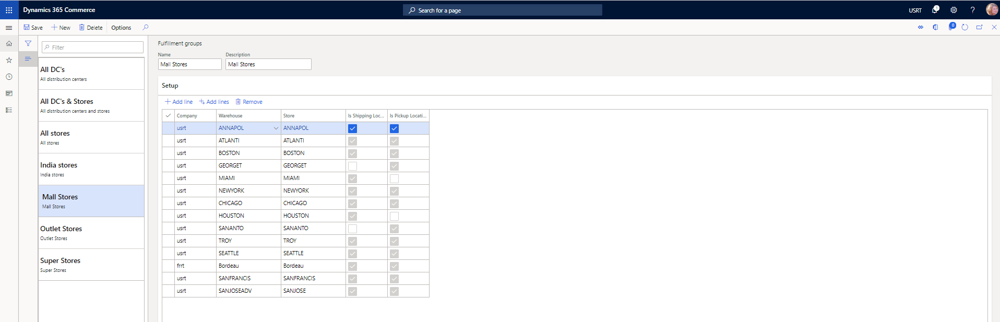

Customer orders in Point of Sale (POS)
This topic provides information about how to create and manage customer orders in Point of Sale (POS). Customer orders can be used to capture sales where shoppers want to pick up products on a later date, pick up products from a different location, or have items shipped to them.
In an omni-channel commerce world, many retailers provide the option of customer orders, or special orders, to meet various product and fulfillment requirements. Here are some typical scenarios:
- A customer wants products to be delivered to a specific address on a specific date.
- A customer wants to pick up products from a store or location that differs from the store or location where the customer purchased those products.
- A customer inside a store location wants to order products today and pick them up from the same store location on a later date.
Retailers can use customer orders to minimize lost sales that stock outages might otherwise cause, because the merchandise can be delivered or picked up at a different time or place.
Set up customer orders
Before you try to use customer order functionality in POS, make sure that you complete all the required configurations in Commerce headquarters.
Configure modes of delivery
To use customer orders, you must configure modes of delivery that the store channel can use. You must define at least one mode of delivery that can be used when order lines are shipped to a customer from a store. You must also define at least one pickup mode of delivery that can be used when order lines are picked up from the store. Modes of delivery are defined on the Modes of delivery page in Commerce headquarters. For more information about how to set up modes of delivery for Commerce channels, see Define delivery modes.
Set up fulfillment groups
Some stores or warehouse locations might not be able to fulfill customer orders. By configuring fulfillment groups, an organization can specify which stores and warehouse locations are shown as options to users who create customer orders in POS. Fulfillment groups are configured on the Fulfillment groups page. Organizations can create as many fulfillment groups as they require. After a fulfillment group is defined, link it to a store by selecting Fulfillment group assignment from the Set up tab on the Action Pane of the Stores page.
In Commerce version 10.0.12 and later, organizations can define whether the warehouse or warehouse and store combinations that are defined in fulfillment groups can be used for shipping, for pickup, or for both shipping and pickup. This allows for added flexibility for the business to determine which warehouses can be selected when creating a customer order for items to ship vs. which stores can be selected when creating a customer order for items to pick up. To use these configuration options, turn on the Ability to specify locations as "Shipping" or "Pickup" enabled within Fulfillment group feature. If a warehouse that's linked to a fulfillment group isn't a store, it can be configured only as a shipping location. It can't be used when orders for pickup are configured in POS.

Configure channel settings
When you work with customer orders in POS, you must consider some of the settings of the store channel. These settings are found on the Stores page in Commerce headquarters.
- Warehouse – This field indicates the warehouse that is used to fulfill orders that are configured for shipment from the store.
- Fulfillment group assignment – Select this button (on the Set up tab on the Action Pane) to link the fulfillment groups that are referenced to show options for pickup locations or shipment origins when customer orders are created in POS.
- Use destination-based tax – This option indicates whether the shipping address is used to determine the tax group that is applied to order lines that are shipped to the customer's address.
- Use customer-based tax – This option indicates whether the tax group that is defined for the customer's delivery address is used to tax customer orders that are created in POS for shipment to the customer's home.

Set up customer order parameters
Before you try to create customer orders in POS, you must configure the appropriate parameters in Commerce headquarters. These parameters can be found on the Customer orders tab of the Commerce parameters page.
- Default order type – You can specify the order type that is assigned by default to customer orders that are created in POS. These customer orders can be either sales orders or quotation orders. Regardless of the default order type, users can still create both sales orders and customer orders from POS.
- Default deposit percentage – Specify the percentage of the order total amount that the customer must pay as a deposit before an order can be confirmed. Depending on their privileges, store associates might be able to override the amount by using the Deposit override operation in POS, if that operation is configured for the transaction screen layout.
- Pickup mode of delivery – Specify the mode of delivery that should be applied to sales order lines that are configured for pickup in POS.
- Carryout mode of delivery – Specify the mode of delivery that should be applied to sales order lines that are considered carryout order lines when a mixed cart is created, where some lines will be picked up or shipped, and other lines will be carried out by the customer immediately.
- Cancellation charge percentage – If a charge should be applied when a customer order is canceled, specify the amount of that charge.
- Cancellation charge code – Specify the Accounts receivable charge code that should be used when a cancellation charge is applied to canceled customer orders through POS. The charge code defines the financial posting logic for the cancellation charge.
- Shipping charge code – If the Use advanced auto charges option is set to Yes, this parameter setting has no effect. If that option is set to No, users will be prompted to manually enter a shipping charge when they create customer orders in POS. Use this parameter to map an Accounts receivable charge code that will be applied to orders when users enter a shipping charge. The charge code defines the financial posting logic for the shipping charge.
- Use advanced auto charges – Set this option to Yes to use system-calculated auto charges when customer orders are created in POS. These auto charges can be used to calculate shipping fees or other order or item-specific charges. For more information about how to set up and use advanced auto charges, see Omni-channel advanced auto charges.

Update transaction screen layouts in POS
Make sure that the POS screen layout is configured to support the creation and management of customer orders, and that all required POS operations are configured. Here are some of the POS operations that are recommended to correctly support customer order creation and management:
- Ship all products – This operation is used to specify that all lines in the transaction cart will be shipped to a destination.
- Ship selected products – This operation is used to specify that selected lines in the transaction cart will be shipped to a destination.
- Pick up all products – This operation is used to specify that all lines in the transaction cart will be picked up from a selected store location.
- Pick up selected products – This operation is used to specify that selected lines in the transaction cart will be picked up from a selected store location.
- Carry out all products – This operation is used to specify that all lines in the transaction cart will be carried out. If this operation is used in POS, the customer order will be converted to a cash-and-carry transaction.
- Carryout out selected products – This operation is used to specify that selected lines in the transaction cart are being carried out by the customer at the time of purchase. This operation is useful only in a hybrid order scenario.
- Recall order – This operation is used to search and retrieve customer orders so that POS users can edit, cancel, or perform fulfillment-related operations on them as required.
- Change mode of delivery – This operation can be used to quickly change the mode of delivery for lines that are already configured for shipment, without requiring that users go through the "ship all products" or "ship selected products" flow again.
- Deposit override – This operation can be used to change the deposit amount that the customer will pay for the selected customer order.

Work with customer orders in POS
Note
Revenue recognition functionality isn't currently supported for use in Commerce channels (e-commerce, POS, call center). Items configured with revenue recognition shouldn't be added to orders created in Commerce channels.
Create a customer order for products that will be shipped to the customer
- On the POS transaction screen, add a customer to the transaction.
- Add products to the cart.
- Select Ship selected or Ship all to ship the products to an address on the customer account.
- Select the option to create a customer order.
- Confirm or change the "ship from" location, confirm or change the shipping address, and select a shipping method.
- Enter the customer's desired order shipment date.
- Use the payment functions to pay for any calculated amounts that are due, or use the Deposit override operation to change the amounts that are due, and then apply payment.
- If the full order total wasn't paid, enter a credit card that will be captured for the balance that is due on the order when it's invoiced.
Create a customer order for products that the customer will pick up
- On the POS transaction screen, add a customer to the transaction.
- Add products to the cart.
- Select Pick up selected or Pick up all to initiate the order pick up configuration.
- Select the store location where the customer will pick up the selected products.
- Select a date when the item will be picked up.
- Use the payment functions to pay for any calculated amounts that are due, or use the Deposit override operation to change the amounts that are due, and then apply payment.
- If the full order total wasn't paid, select whether the customer will provide payment later (at pick up), or whether a credit card will be tokenized now, and then used and captured at the time of pickup.
Edit an existing customer order
Retail orders that are created in either the online or store channel can be recalled and edited through POS as required.
Important
Not all retail orders can be edited through the POS application. Orders that are created in a call center channel can't be edited through POS if the Enable order completion setting is turned on for the call center channel. To ensure correct payment processing, orders that originated in a call center channel and that use Enable order completion functionality must be edited through the call center application in Commerce headquarters.
In version 10.0.17 and later, users can edit eligible orders through the POS application, even if the order is partially fulfilled. However, orders that are fully invoiced still can't be edited through POS. To enable this capability, turn on the Edit partially fulfilled orders in Point of Sale feature in the Feature management workspace. If this feature is not enabled, or if you're using version 10.0.16 or earlier, users will only be able to edit customer orders in POS if the order is fully open. Further, if the feature is enabled, you can limit which stores can edit partially fulfilled orders. The option to disable this capability for specific stores can be configured through the Functionality profile under the General FastTab.
- Select Recall order.
- Use Search to enter filters to find the order, and then select Apply.
- Select the order in the list of results, and then select Edit. If the Edit button is unavailable, the order is in a state where it can't be edited.
- From the transaction cart, make any necessary changes to the customer order. Some changes might be prohibited during editing.
- Complete the editing process by selecting a payment operation.
- To exit the editing process without saving any changes, you can use the Void transaction operation.
Cancel a customer order
- Select Recall order.
- Use Search to enter filters to find the order, and then select Apply.
- Select the order in the list of results, and then select Cancel. If the Cancel button is unavailable, the order is in a state where it can no longer be canceled.
- If cancellation charges are configured, confirm them. You can adjust the cancellation charges before you confirm them, as required.
- From the transaction cart, complete the cancellation process by selecting a payment operation. If deposits that were paid exceed the cancellation charge, refund payments might be due.
- To exit the cancellation process without saving any changes, you can use the Void transaction operation.
Finalizing the customer order shipment or pickup from POS
After an order is created, the items will be picked up by the customer from a store location or shipped, depending on the configuration of the order. For more information about this process, see the store order fulfillment documentation.
Asynchronous transaction flow for customer orders
Customer orders can be created in POS in either synchronous mode or asynchronous mode. If you notice performance issues or user delays when you create customer orders in POS, consider turning on asynchronous order creation.
Enable customer orders to be created in asynchronous mode
- In Commerce headquarters, on the Functionality profiles page, select the functionality profile that corresponds to the store that you want to configure.
- On the General FastTab, set the Create customer order in async mode option to Yes.
When the Create customer order in async mode option is set to Yes, customer orders are always created in asynchronous mode, even if Retail Transaction Service (RTS) is available. If you set this option to No, customer orders are always created in synchronous mode by using RTS. When customer orders are created in asynchronous mode, they're pulled and created as retail transactions in Commerce headquarters from the Commerce Pull (P) jobs. The corresponding sales orders for the retail transactions are created when Synchronize orders is run either manually or through a batch process.